사회조사분석사-2급 (2013-08-18 기출문제)
1과목: 조사방법론 I
1. 다음 중 가설로서 가장 적합한 형태는?
- 철수는 지금 서울에 있다.
- 철수는 지금 서울에 있으면서 부산에 있다.
- 철수는 지금 서울에 있으면서 동시에 서울에 있지 않다.
- 철수는 지금 서울에 있거나 그렇지 않으면 서울에 있지 않다.
(정답률: 62%)

2. 다음 중 과학적 연구의 특징에 해당하지 않는 것은?
- 과학적 연구는 논리적(logical)이다.
- 과학적 연구는 결정론적(deterministic)이다.
- 과학적 연구는 직관적(intuitive)이다.
- 과학적 연구는 일반화(generalization)를 목적으로 한다.
(정답률: 61%)
3. 통계적 회귀(statistical regression)에 관한 설명으로 옳은 것은?
- 수집된 자료가 어느 특정 선을 중심으로 분포하는 현상이다.
- 자료 분석을 했을 경우, 종속변수가 중 독립변수의 변화에 따라 함께 변화하는 현상이다.
- 타당도 높은 연구에서는 수집된 자료가 광범위하게 분포되지 않고 응집력을 갖춘 회귀성을 나타내야 한다는 것이다.
- 사전측정에서 극단적인 점수를 얻은 경우에 사후측정에서 독립변수의 효과에 관계없이 평균치로 값이 근접하려는 경향이다.
(정답률: 52%)
4. 다음 사례에서 가장 적합한 연구방법은?
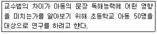
- 참여관찰법
- 내용분석법
- 실험법
- 조사연구법
(정답률: 55%)
5. On-line 조사에 대한 설명으로 틀린 것은?
- 표본의 대표성이 아주 높은 편이다.
- 복수응답의 가능성을 배제할 수 없다.
- 컴퓨터 통신망상에서 이루어지는 형태의 사회조사이다.
- 면접조사, 우편조사, 전화조사 등의 전통적인 방법에 비해 짧은 시일 내에 비교적 저렴한 비용으로 실시할 수 있다.
(정답률: 68%)
6. 관찰자의 유형에 관한 설명으로 틀린 것은?
- 완전참여자는 윤리적 및 과학적 문제가 발생할 수 있다.
- 연구자가 완전참여자일 때는 연구대상에 영향을 미치지 않는다.
- 완전관찰자의 관찰은 피상적이고 일시적이 될 수 있다.
- 완전관찰자는 완전참여자보다 연구대상을 충분히 이해할 수 있는 가능성이 낮다.
(정답률: 62%)
7. 우편조사와 비교했을 때, 면접조사가 가지는 장점이 아닌 것은?
- 응답자에게 익명성에 대한 확신을 부여할 수 있다.
- 응답률이 높다.
- 보다 신뢰성 있는 대답을 얻을 수 있다.
- 응답자와 그 주변의 상황들을 직접 관찰할 수 있다.
(정답률: 67%)
8. 실험설계를 위한 필수요건이 아닌 것은?
- 실험대상자들을 실험집단과 통제집단으로 무작위 배분하여야 한다.
- 독립변수는 실험집단에만 투입하고 통제집단은 통제되어야 한다.
- 통제집단과 비교집단을 함께 갖추어야 한다.
- 독립변수의 효과를 추정하기 위해 종속변수가 비교되어야 한다.
(정답률: 43%)
9. 다음 중 관찰방법의 특징이 아닌 것은?
- 연구대상의 행태에서 발생하는 사회적 맥락까지 포착할 수 있다.
- 사회적 관계에 영향을 미치는 사건을 이해하도록 해준다.
- 객관적 사실에 치중하여 피관찰자의 철학, 세계관은 배제한다.
- 다른 연구와의 비교는 규칙성을 확인시켜준다.
(정답률: 57%)
10. 개념의조작화 과정에 관한 설명으로 옳은 것은?
- 조작적 정의는 개념에 대한 사전적 정의이다.
- 조작적 정의, 명목적 정의, 측정의 순서로 이루어진다.
- 변수를 조작적으로 정의하는 방법은 한정되어 있다.
- 조작화 과정의 최종 산물은 수량화이다.
(정답률: 49%)
11. 다음의 조사유형으로 옳은 것은?
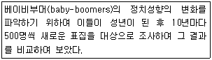
- 횡단(cross-sectional)조사
- 추세(trend)조사
- 코호트(cohort)조사
- 패널(panel)조사
(정답률: 49%)
12. 다음 중 분석단위와 연구내용이 틀리게 짝지어진 것은?
- 개인 - 전체 농부 중에서 32%가 여성임에도 불구하고 여성은 전통적으로 농부라기보다 농부의 아내로 인식되었다.
- 개인 - 1970년부터 현재까지 고용주가 게재한 구인광고의 내용과 강조점이 어떻게 변화하였는지 파악하였다.
- 도시 - 인구가 10만명 이상인 도시 중 89%는 적어도 종합병원이 2개 이상 있었다.
- 도시 - 흑인이 많은 도시에서 범죄율이 높은 것으로 나타났다.
(정답률: 53%)
13. 응답자의 대답이 불충분하거나 모호할 때 추가질문을 통해 정확한 대답을 이끌어내는 면접조사상의 기술은?
- 심층면접(in-depth interview)
- 래포(rapport)
- 투사법(projective method)
- 프로빙(probing)
(정답률: 44%)
14. 자기기입식 설문조사와 비교한 면접설문조사의 장점으로 옳은 것은?
- 자료입력이 편리하다.
- 응답의 결측치를 최소화한다.
- 조사대상 1인당 비용이 저렴하다.
- 폐쇄형 질문에 유리하다.
(정답률: 60%)
15. 가설에 관한 설명으로 틀린 것은?
- 가설은 과학적 방법을 통하여 검증되어 가설이 옳고 그름을 판단할 수 있어야한다.
- 가설은 동일 연구 분야의 다른 가설이나 이론과 연관이 없어야 한다.
- 가설은 두 개 이상의 구성개념이나 변수 간의 관계에 대한 진술이다.
- 가설은 반드시 검증 가능한 형태로 진술되어야 한다.
(정답률: 60%)
16. 질적조사방법과 양적조사방법의 차이점에 관한 설명으로 틀린 것은?
- 양적방법은 관찰자로부터 독립된 객관적 현상이 존재한다고 보는데 비하여 질적방법은 그렇지 않다.
- 양적방법은 현상의 결과적 측면에 주력한다면 질적방법은 현상의 과정적 측면을 이해하려 주력한다.
- 양적방법은 조사절차가 유연하고 객관적이지만 질적방법은 그렇지 못하다.
- 양적방법은 일반화(generalization)를 위해 노력하지만 질적방법은 그렇지 못하다.
(정답률: 47%)
17. 다음 사례에서 영향을 미칠 수 있는 대표적인 내적 타당도 저해요인은?
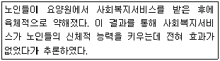
- 성숙효과(maturation)
- 외부사건(history)
- 검사효과(testing)
- 도구효과(instrumentation)
(정답률: 44%)
18. 다음 중 우편조사의 회수율을 높이기 위한 방법과 가장 거리가 먼 것은?
- 질문지 발송 후 추가서신을 발송한다.
- 질문지를 발송할 때 기념품을 같이 발송 한다.
- 연구 주체와 조사 기관을 명확히 제시한다.
- 반송용 봉투에 우표는 물론 응답자의 주소와 성명을 기재해 둔다.
(정답률: 42%)
19. 다음 ( )안에 알맞은 것은?
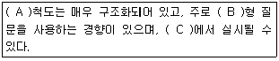
- A : 양적, B : 폐쇄, C : 설문지형식
- A : 양적, B : 개방, C : 면접
- A : 질적, B : 개방, C : 심층면접
- A : 질적, B : 폐쇄, C : 면접
(정답률: 53%)
20. 다음 질문문항에서 가장 문제시 될 수 있는 것은?
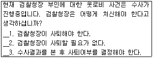
- 문항의 포괄성
- 위협적 질문
- 유도질문
- 이중질문
(정답률: 50%)
21. 내용분석법에 관한 설명으로 틀린 것은?
- 질적인 자료를 양적으로 전환하는 방법이다.
- 군집표집법이 표집방법으로 활용될 수 있다.
- 인간의 의사소통기록물을 대상으로 분석한다.
- 내용분석은 조사반응성으로 인하여 활용의 한계점을 가지고 있다.
(정답률: 31%)
22. 다음 중 개방형 질문의 장점이 아닌 것은?
- 응답 가능한 모든 응답의 범주를 모를 때 적합하다.
- 응답자가 어떻게 응답하는가를 탐색적으로 살펴보고자 할 때 적합하다.
- 개인의 사생활이나 소득수준과 같이 밝히기를 꺼리는 민감한 주제에 보다 적합하다.
- 몇 개의 범주로 압축시킬 수 없을 정도로 쟁점이 복합적일 때 적합하다.
(정답률: 59%)
23. 순수실험설계(true experimental design)의 특징이 아닌 것은?
- 비동질 통제집단의 설정
- 실험집단과 통제집단에 대한 무작위 할당
- 독립변수의 조작
- 외생변수의 통제
(정답률: 41%)
24. 개방형 질문의 특성과 가장 거리가 먼 것은?
- 응답자료 집계 및 분석이 매우 편리하다.
- 응답을 통해 새로운 정보를 얻을 수 있다.
- 응답자들에게 심적 부담을 주기 쉽다.
- 상대적으로 응답 거부율이 높다.
(정답률: 55%)
25. 논리적 연관성 도출방법 중 연역적 방법과 귀납적 방법에 관한 설명으로 틀린 것은?
- 귀납적 방법은 구체적인 사실로부터 일반원리를 도출해낸다.
- 연역적 방법은 일정한 이론적 전제를 수립해 놓고 그에 따라 구체적인 사실을 수집하여 검증함으로써 다시 이론적 결론을 유도한다.
- 연역적 방법은 이론적 전제인 공리로부터 논리적 분석을 통하여 가설을 정립하여 이를 경험의 세계에 투사하여 검증하는 방법이다.
- 귀납적 방법이나 연역적 방법을 조화시키면 상호 배타적이기 쉽다.
(정답률: 50%)
26. 학술지에 “비행의 결정요인에 대한 연구: 소년원 재소자를 중심으로”라는 제목의 논문이 실렸다. 제목을 보고 알 수 있는 것은?
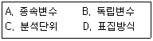
- A, B
- C, D
- A, C
- B, D
(정답률: 54%)
27. 조사연구의 목적과 그 예가 잘못 짝지어진 것은?
- 설명(explanation) - 시민들이 왜 담배값 인상에 반대하는지 파악하고자 하는 연구
- 평가(evaluation) - 현재의 공공의료정책이 1인당 국민의료비를 증가시켰는지에 대한 연구
- 기술(description) - 유권자들의 대선후보 지지율 조사
- 탐색(exploration) - 단일사례설계를 통하여 개입의 효과를 검증하려는 연구
(정답률: 34%)
28. 사회과학연구에서 인과관계를 규명하는 내용에 관한 설명으로 틀린 것은?
- 두 변수 사이에 시간적 순서가 존재해야 한다.
- 두 변수 간에는 정(+) 혹은 부(-)적 관계가 존재할 수도 있다.
- 두 변수 간에는 상관관계가 존재해야 한다.
- 두 변수 간에 상관이 발견되면 인과관계도 성립된다.
(정답률: 54%)
29. 다음 중 조사자의 주관이 개입될 가능성이 가장 높은 자료수집방법은?
- 면접조사
- 온라인조사
- 우편조사
- 전화조사
(정답률: 63%)
30. 다음 중 사례조사에 관한 설명으로 옳은 것은?
- 본 조사를 실행하기 앞서 먼저 시행한다.
- 조사의 범위를 한 지역 또는 한 번의 현상에 국한시켜 연구하고자 하는 현장의 대표성을 유지시킨 채 결과를 도출하는 방법이다.
- 일정지역 또는 작은 sample을 추출하여 대표성을 유지시킨 채 사전에 진행하는 것이다.
- 조사의 타당도, 신뢰도를 측정해 보는 방법이다.
(정답률: 35%)
2과목: 조사방법론 II
31. 확률표집(probability sampling)에 관한 설명으로 옳은 것은?
- 표본이 모집단에 대해 갖는 대표성을 추정하기 어렵다.
- 모집단이 무한하게 클 경우에 적용할 수 있는 표집방법이다.
- 표본의 추출 확률을 알 수 있다.
- 모집단 전체에 대한 구체적 자료가 없는 경우 사용된다.
(정답률: 39%)
32. 다음 중 확률표집에 해당하는 것은?
- 단순무작위표집(sample random sampling)
- 편의표집(convenience sampling)
- 할당표집(quota sampling)
- 유의표집(purposive sampling)
(정답률: 49%)
33. 연속변수(continuous variable)와 이산변수(discrete variable)에 관한 설명으로 틀린 것은?
- 연속변수는 사람 대상물 또는 사건을 그들 속성의 크기나 양에 따라 분류 하는 것이다.
- 연속변수는 측정한 값들이 척도상에서 무한대로 미분해도 가능하리만큼 연속성을 띤 것으로 거의 무한개의 값을 가실 수 있다.
- 이산변수는 정수값으로 구성된다.
- 등간척도.비율척도는 이산변수와 관련되어 있다.
(정답률: 40%)
34. 다음에 해당하는 표집방법은?
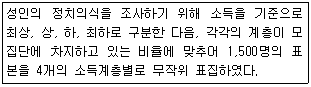
- 층화(stratified)표집
- 군집(cluster)표집
- 할당(quota)표집
- 체계적(systematic) 무작위 표집
(정답률: 43%)
35. 표본추출에 관한 용어의 설명으로 틀린 것은?
- 모집단(population)은 모든 연구대상 혹은 분석단위들이 모인 집합이다.
- 표본(sample)은 모집단에서 일정 부분 추출된 요소들의 집합이다.
- 모수(parameter)는 모집단의 특성치로, 통계치(statistic)를 근거로 추정한다.
- 통계치(statistic)는 모수로부터 계산되는 표본값이다.
(정답률: 42%)
36. 개념적 정의의 특성으로 틀린 것은?
- 정의하려는 대상이 무엇이든 그것만의 특유한 요소나 성질을 적시해야 한다.
- 순환적인 정의가 이루어져야 한다.
- 적극적 혹은 긍정적인 표현을 써야 한다.
- 뜻이 분명해서 누구나 알아들을 수 있는 의미를 공유하는 용어를 써야 한다.
(정답률: 35%)
37. 타당성에 관한 설명으로 틀린 것은?
- 측정도구가 측정하고자 하는 현상을 일관성 있게 측정하였는가를 말해준다.
- 측정도구가 실제로 측정하고자 하는 개념을 측정하였는가를 말해준다.
- 타당성은 그 개념이 정확히 측정되었는가를 말해준다.
- 문항구성이 측정하고자 하는 개념을 얼마나 잘 반영하고 있는가를 말해준다.
(정답률: 38%)
38. 표본의 크기에 관한 설명으로 옳은 것은?
- 변수의 수가 증가할수록 표본의 크기는 커야한다.
- 모집단의 이질성이 클수록 표본의 크기는 작아야 한다.
- 소요되는 비용과 시간은 표본의 크기에 영향을 미치지 않는다.
- 분석변수의 범주의 수는 표본의 크기를 결정하는 요인이 아니다.
(정답률: 40%)
39. 다음은 무엇에 관한 설명인가?
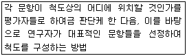
- 거트만척도(Guttman scale)
- 서스톤척도(Thurston scale)
- 리커트척도(Likert scale)
- 의미분화척도(semantic differential scale)
(정답률: 38%)
40. 용수철이 고장 난 체중계가 있어서 체중을 잴 때마다 항상 실제와 다르게 체중이 일정하게 나타난다면, 이 체중계의 타당도와 신뢰도는?
- 신뢰도와 타당도 모두 낮다.
- 신뢰도와 타당도 모두 높다.
- 신뢰도는 낮고 타당도는 높다.
- 신뢰도는 높고 타당도는 낮다.
(정답률: 42%)
41. 조작적 정의에 관한 설명으로 옳은 것은?
- 현실세계에서 검증할 수 없다.
- 개념적 정의에 앞서 사전에 이루어진다.
- 경험적 지표를 추상적으로 개념화하는 것이다.
- 개념적 정의에 최대한으로 일치하도록 정의해야한다.
(정답률: 28%)
42. 암기력을 측정하기 위해 암기 한 것들을 모두 종이 위에 쓰도록 하는 벙법과 암기한 것을 모두 말하도록 하는 방법을 사용하는 경우, 서로 다른 두 가지의 측정방법을 측정한 결과 값들 간에 상관관계의 정도를 나타내는 타당성은 무엇인가?
- 내용타당성(content validity)
- 기준에 의한 타당성(criterion-related validity)
- 예측타당성(predictive validity)
- 집중타당성(convergent validity)
(정답률: 28%)
43. 변수의 종류에 관한 설명으로 옳게 짝지어진 것은?
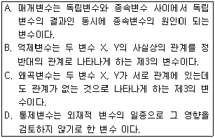
- A, B
- B, C
- C, D
- A, D
(정답률: 35%)
44. 신뢰도 추정방법 중 동일측정도구를 동일상황에서 동일대상에게 서로 다른 시간에 측정한 측정결과를 비교하는 것은?
- 재검사법
- 복수양식법
- 반분법
- 내적일관성 분석
(정답률: 49%)
45. 거트만척도(Guttman scale)에 관한 설명으로 틀린 것은?
- 거트만척도의 기본구상은 척도구성 문항들의 강도가 다르기 때문에 이를 서열화 시킬 수 있다는 것이다.
- 척도를 구성하는 과정에서 문항들의 단일차원성을 경험적으로 검증하도록 설계된 것이다.
- 강도가 가장 높은 문항에 대한 응답을 바탕으로 다른 문항에 대한 응답을 예측할 수 있다.
- 거트만척도를 구성하는 과정에서 응답조사자료가 필요하지 않아 간편한 장점이 있다.
(정답률: 39%)
46. 표본추출오차와 비표본추출오차에 관한 설명으로 틀린 것은?
- 표본추출오차의 크기는 표본의 크기가 증가함에 따라 감소한다.
- 표본추출오차의 크기는 표본크기의 제곱근에 반비례한다.
- 비표본추출오차는 표본조사와 전수조사에서 모두 발생할 수 있다.
- 전수조사의 경우 비표본추출오차는 없으나 표본추출오차는 상당히 클 수 있다.
(정답률: 39%)
47. 측정오류에 관한 설명으로 틀린 것은?
- 체계적 오류는 신뢰도와 관련된다.
- 측정오류는 일관되지 않게 나타날 수 있다.
- 측정이 이루어지는 환경적 요인의 변화에 따라 측정오류가 발생할 수 있다.
- 체계적 오류는 자료수집방법이나 수집과정에 개입될 수 있다.
(정답률: 37%)
48. 다음 표본조사 설계절차 중 가장 먼저 해야 할 것은?
- 모집단의 확정
- 표본크기의 결정
- 표집틀의 선정
- 표본추출방법의 결정
(정답률: 50%)
49. 다음 중 사회조사에서의 측정에 관한 설명으로 옳은 것은?
- 측정이란 사물이나 사건 등의 속성에 수치를 부과하는 것이다.
- 객관적으로 파악될 수 없는 태도변수는 측정이 불가능하다.
- 반복해서 측정하여도 동일한 결과를 얻을 수 없다는 가정을 전제한다.
- 측정하고자 하는 개념이 연구자에 따라 정의가 달라질 수 없다.
(정답률: 46%)
50. 체계적 오류의 주요 발생 원인에 해당하는 것은?
- 설문지 문항 수
- 사회적 바람직성
- 복잡한 응답절차
- 응답자의 기분
(정답률: 31%)
51. 현직 대통령에 대한 인기도를 0점에서 100점까지의 값 가운데 하나를 선택하도록 했다. (높은 수치일수록 높은 지지) 갑은 30점을 준 반면 을은 60점을 주었다. 갑과 을의 평가에 대한 설명으로 옳은 것은?
- 을은 갑보다 2배만큼 현직 대통령을 더욱 더 지지한다.
- 갑은 을보다 2배만큼 현직 대통령을 더욱 더 지지한다.
- 을이 더 지지하지만 그 차이가 2배라고 할 수 없다.
- 갑과 을의 평가를 비교할 수 없다.
(정답률: 49%)
52. 척도구성방법 중 인종, 사회계급과 같은 여러 가지 형태의 사회집단에 대한 사회적 거리를 측정하기 위한 척도는?
- 서스톤척도
- 보가더스척도
- 거트만척도
- 리커트척도
(정답률: 41%)
53. 2년제 대학의 대학생 집단을 학년과 성별, 계열별(인문계, 자연계, 예체능계)로 구분하여 할당표본추출을 할 경우 할당표는 총 몇 개의 범주로 구분되는가?
- 3개
- 5개
- 12개
- 24개
(정답률: 51%)
54. 조사대상자들의 종료를 불교, 기독교, 가톨릭, 기타의 범주로 나누어 관찰한 경우 측정수준은?
- 명목척도
- 서열척도
- 등간척도
- 비율척도
(정답률: 50%)
55. 판단표본추출법(judgement samplint)에 관한 설명으로 옳은 것은?
- 모집단의 특성에 대한 가정을 하지 않는다.
- 확률표본추출법의 일종이다.
- 연구자가 자신의 연구능력과 사전지식을 활용하여 응답자를 고를 수 있다.
- 표본의 대표성을 보장할 수 있다.
(정답률: 49%)
56. 다음에 사용된 표집방법은?
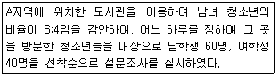
- 단순무작위(simple random)표집
- 체계적(systematic)표집
- 층화(stratified)표집
- 할당(quota)표집
(정답률: 41%)
57. 제공되는 정보와 자료 분석에 이용할 수 있는 통계적 방법의 수준에 따라 척도를 순서대로 나열한 것은?
- 서열척도 > 명목척도 > 등간척도 > 비율척도
- 명목척도 > 서열척도 > 비율척도 > 등간척도
- 비율척도 > 등간척도 > 서열척도 > 명목척도
- 등간척도 > 비율척도 > 서열척도 > 명목척도
(정답률: 49%)
58. 다음 사례의 표본추출방법은?
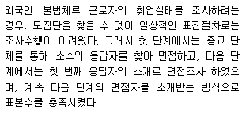
- 할당표집(quota sampling)
- 군집표집(cluster sampling)
- 편의표집(convenience sampling)
- 눈덩이표집(snowball sampling)
(정답률: 52%)
59. 다음 중 신뢰성을 눂일 수 있는 방법으로 틀린 것은?
- 측정항목의 수를 줄인다.
- 측정항목의 모호성을 제거한다.
- 중요한 질문의 경우 동일하거나 유사한 질문을 2회 이상 한다.
- 조사대상자가 잘 모르거나 관심이 없는 내용은 측정하지 않는다.
(정답률: 40%)
60. 측정의 타당도에 관한 설명으로 틀린 것은?
- 기준타당도는 수렴타당도, 판별타당도로 구분된다.
- 내용타당도는 전문가의 견해를 통해 판단할 수 있다.
- 구성체타당도는 이론적 틀 내에서 측정도구의 타당성을 경험적으로 검증한다.
- 동시타당도는 작성한 측정도구를 이미 존재하고 있는 신뢰할만한 측정도구와 비교하여 검증한다.
(정답률: 23%)
3과목: 사회통계
61. 다음 회귀선의 분산분석표는 과외활동 정도가 특정과목의 선호정도에 어떻게 영향을 미치는가에 관한 것이다. 아래 분산분석표에서 결정계수(R2)는?
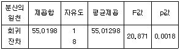
- 0.72
- 0.66
- 0.49
- 0.80
(정답률: 28%)
62. 표본크기가 3인 자료 x1, x2, x3의 평균
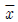
=10, 분산 s2=100 이다. 관측값 10이 추가되었을 때, 4개 자료의 분산 s2은? (단, 처음 3개 자료의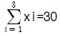
,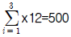
)- 110/3
- 50
- 55
- 200/3
(정답률: 24%)
63. 정규분포를 따르는 모집단의 모평균에 대한 가설 H0 : μ = 50 VS H1 : μ < 50을 검정하고자 한다. 크기 n=100의 임의표본을 취하여 표본평균을 구한 결과
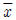
=49.02를 얻었다. 모집단의 표준편차가 5라면 유의확률은 얼마인가? (단, P(Z≤-1.96)=0.025, P(Z≤-1.645)=0.⑤)- 0.025
- 0.⑤
- 0.95
- 0.975
(정답률: 24%)
64. 일정기간 공사장지대에서 방목한 가축 소변의 불소농도에 변화가 있는가를 조사하고자 한다. 랜덤하게 추출한 10마리의 가축 소변의 불소농도를 방목 초기에 조사하고 일정기간 방목한 후 다시 소변의 불소 농도를 조사하였다. 방목 전후의 불소농도에 차이가 있는가에 대한 분석방법으로 적합한 것은?
- 단일 모평균에 대한 검정
- 독립표본에 의한 두 모평균의 비교
- 쌍체비교(대응비교)
- F-test
(정답률: 32%)
65. P(A)=P(B)=1/2, P(A.B)= 2/3 일 때, P(A∪B)를 구하면?
- 1/3
- 1/2
- 2/3
- 1.0
(정답률: 23%)
66. 표준편차가 10인 모집단에서 임의추출한 25개의 표본을 이용하여 모 평균이 70보다 크다는 주장을 검정하고자 한다. 기각역이 R:
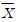
≥ c 인 검정의 유의수준이 α=0.025가 되도록 c를 구하면? (단, Z가 표준정규분포를 따르는 확률변수일 때, P(Z>1.96)=0.025)- 70.98
- 71.96
- 73.92
- 77.84
(정답률: 32%)
67. 두 변수 가족수와 생활비간의 상관계수가 0.6이라면, 생활비 변동의며 %가 가족수로 설명되어진다고 할 수 있는가?
- 0.36
- 36
- 0.6
- 60
(정답률: 19%)
68. 단순회귀모형 Yi=α + βxi + εi(i=1, 2, …, n)에서 잔차 ei=yi-
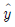
의 성질을 모두 짝지은 것은?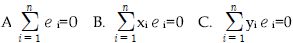
- A, B
- A, C
- B, C
- A, B, C
(정답률: 20%)
69. 정규분포에 관한 설명으로 옳은 것은?
- 모든 연속형의 확률변수는 정규분포를 따른다.
- 정규분포를 따르는 변수는 평균이 0이고 분산이 1이다.
- 이항분포를 따르는 변수는 언제나 정규분포를 통해 확률값을 구할 수 있다.
- 정규분포를 따르는 변수는 평균, 중위수, 최빈값이 모두 같다.
(정답률: 33%)
70. 상관계수에 관한 설명으로 옳은 것은?
- 상관계수의 값은 언제나 음수이다.
- 상관계수의 값은 언제나 양수이다.
- 공분산의 값이 0이면 상관계수는 1이다.
- 상관계수의 값은 언제나 -1과 1사이에 있다.
(정답률: 41%)
71. 평균이 μ이고 분산은 σ2인 정규모집단에서 모평균 μ를 추정하기 위해서 크기 3인 확률표본 X1, X2, X3를 추출하였다. 두 추정량  1=(X1 + X2 + X3)/3과
1=(X1 + X2 + X3)/3과
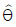
2=(2X1 + 5X2 + 3X3)/10에 관한 설명으로 옳은 것은? 1은 불편추정량이고, 2는 편향추정량이다.
1은 불편추정량이고, 2는 편향추정량이다. 1은 일치추정량이고, 2는 유효추정량이다.
1은 일치추정량이고, 2는 유효추정량이다. 1은 유효추정량이고, 2는 불편추정량이다.
1은 유효추정량이고, 2는 불편추정량이다. 1은 유효추정량이고, 2는 편향추정량이다.
1은 유효추정량이고, 2는 편향추정량이다.
(정답률: 21%)
72. 모집단의 표준편차의 값이 작을 때의 표본평균 값은?
- 대표성이 크다.
- 대표성이 적다.
- 대표성의 정도는 표준편차와 관계없다.
- 어느 것도 해당되지 않는다.
(정답률: 33%)
73. 어떤 대학 사회학과 학생들의 통계학 성적분포가 근사적으로 N(70,102)을 따른다고 한다. 50점 이하인 학생에게 F학점을 준다고 할 때 F학점을 받게 될 학생들의 비율을 구할 수 있는 것은?
- P(Z≤-1)
- P(Z≤1)
- P(Z≤-2)
- P(Z≤2)
(정답률: 32%)
74. 어느 지역의 청년취업률을 알아보기 위해 조사한 500명 중 400명이 취업을 한 것으로 나타냈다. 이 지역의 청년취업률에 대한 95% 신뢰 구간은? (단, Z가 표준정규분포를 따르는 확률변수일 때, P(Z>1.96)=0.025)
- 0.8±1.96×
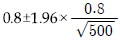
- 0.8±1.96×
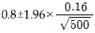
- 0.8±1.96×
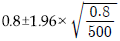
- 0.8±1.96×
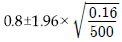
(정답률: 25%)
75. I개 그룹의 평균을 비교하고자 한다. 다음 일원분산분석모형에 대한 가설 H0 : α1 = α2 = … = αI = 0을 유의수준 0.⑤에서 F-검정 결과 p-값이 0.07이었을 때의 추론 결과로 옳은 것은?
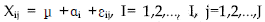
- I개의 그룹 평균은 모두 같다.
- I개의 그룹 평균은 모두 다르다.
- I개의 그룹 평균 중 적어도 하나는 다르다.
- I개의 그룹 평균은 증가하는 관계가 성립한다.
(정답률: 24%)
76. 다음 중 바람직한 추정량(estimator)의 선정기준이 아닌 것은?
- 할당성(quota)
- 불편성(unbiasedness)
- 효율성(efficiency)
- 일치성(consistency)
(정답률: 33%)
77. 앞면과 윗면이 나올 확률이 동일한 동전을 10번 독립적으로 던질 때 앞면이 나오는 횟수를 X라 하면 X의 기댓값과 분산은?
- E(X)=5, Var(X)=
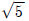
- E(X)=5, Var(X)=
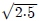
- E(X)=5, Var(X)=2.5
- E(X)=2.5, Var(X)=5
(정답률: 38%)
78. n개의 범주로 된 변수를 가변수(dummy variable)로 만들어 회귀분석에 이용할 경우 몇 개의 가변수가 회귀분석모형에 포함되어야 하는가?
- n
- n-1
- n-2
- n-3
(정답률: 40%)
79. 어느 지역 고등학교 학생 중 안경을 착용한 학생들의 비율을 추정하기 위해 이 지역 고등학생 성별 구성비에 따라 남학생 600명, 여학생 400명을 각각 무작위로 추출하여 조사하였더니 남학생 중 240명, 여학생 중 60명이 안경을 착용한다는 조사결과를 얻었다. 이 지역 전체 고등학생 중 안경을 착용한 학생들의 비율에 대한 가장 적절한 추정값은?
- 0.4
- 0.3
- 0.275
- 0.15
(정답률: 31%)
80. 일원배치법에 관한 설명으로 가장 적합한 것은?
- 일원배치법의 모든 처리별로 반복수는 동일하여야 한다.
- 일원배치법은 여러 그룹의 분산의 차이를 해석할 수 있다.
- 3명의 기술자가 3가지의 재료를 이용해서 어떤 제품을 만들고자 할 때 가장 좋은 제품을 만들 수 있는 조건을 찾으려면 일원배치법이 적절한 방법 이다.
- 일원배치법은 비교하고자 하는 조건의 수에는 구애받지 않는다.
(정답률: 20%)
81. 어느 공공기관의 민원서비스 만족도에 대한 여론조사를 하기 위하여 적절한 표본크기를 결정하고자 한다. 95% 신뢰수준에서 모비율에 대한 추정오차의 한계가 ±4% 이내에 있게 하려면 표본크기는 최소 얼마가 되어야 하는가? (단, 표준화 정규분포에서 P(Z≥1.96)=0.025)
- 157명
- 601명
- 1201명
- 2401명
(정답률: 28%)
82. 다음 단순회귀모형에 대한 설명으로 틀린 것은?(단, 오차항 εi는 서로 독립이며 동일한 분포 N(0, σ2)을 따른다.)
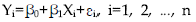
- 각 Yi의 기댓값은 β0+β1Xi로 주어진다.
- 오차항 εi와 Yi는 동일한 분산을 갖는다.
- β0는 Xi가
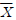
일 경우 Y의 반응량을 나타낸다. - 모든 Yi들은 상호 독립적으로 측정된다.
(정답률: 28%)
83. 평균이 40, 중앙값이 38, 표준편차가 400일 때 변이계수는?
- 10
- 1000
- 0.4
- 40
(정답률: 29%)
84. 노사문제에 대한 여론을 조사하기 위하여 전국의 사업장에서 조합원 1200명을 임의로 추출하여 찬반을 조사한 결과 960명이 찬성하였다. 찬성률에 대한 표준오차는?
- 0.0811
- 0.0412
- 0.0324
- 0.0115
(정답률: 16%)
85. 환자군과 대조군의 혈압을 비교하고자 한다. 각 집단에서 헐압은 정규분포를 따른다고 한다. 환자군 12명, 대조군 12명을 추출하여 평균을 조사하였다. 두 표본 t-검정을 실시할 때 적절한 자유도는 얼마인가?
- 11
- 12
- 22
- 24
(정답률: 35%)
86. 다음 6개 자료의 통계량에 대한 설명으로 틀린 것은?
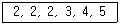
- 최빈수는 2이다.
- 중앙값은 2.5이다.
- 평균은 3이다.
- 왜도는 0보다 작다.
(정답률: 35%)
87. 다음 확률분포 중 확률변수의 성질상 다른 분포와 구별되는 것은?
- 정규분포
- 이항분포
- 포아송분포
- 다항분포
(정답률: 20%)
88. 주사위를 120번 던져서 얻은 결과가 다음과 같다. 주사위가 공정하다는 가정 하에서 1 × 6 분할표에 대한 X<sup>2</sup>-통계량 값은?(문제오류로 정답은 4번입니다. 추후 기출문제를 다시 복원하여 두겠습니다.)
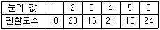
- 보기없음(추후 문제를 다시 복원하여 두겠습니다.)
- 보기없음(추후 문제를 다시 복원하여 두겠습니다.)
- 보기없음(추후 문제를 다시 복원하여 두겠습니다.)
- 보기없음(추후 문제를 다시 복원하여 두겠습니다.)
(정답률: 33%)
89. 크기 n인 표본으로 신뢰수준 95%를 갖도록 모평균을 추정하였더니 신뢰구간의 길이가 10이었다. 동일한 조건하에서 표본의 크기만을 4배로 늘이면 신뢰구간의 길이는?
- 1/4로 줄어든다.
- 1/2로 줄어든다.
- 2배로 늘어난다.
- 4배로 늘어난다.
(정답률: 33%)
90. 이산형 확률변수 (X, Y)의 결합확률분포표가 다음과 같이 주어진 경우, X, Y의 상관계수에 대한 설명으로 옳은 것은?
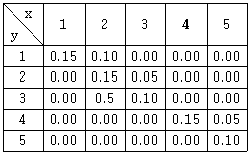
- 상관계수는 양의 값을 갖는다.
- 상관계수는 음의 값을 갖는다.
- 상관계수는 0이다.
- 상관계수를 구할 수 없다.
(정답률: 34%)
91. Y는 20세 이상의 한국국적을 가지고 있는 성인의 신장이 160cm와 180cm 사이에 있으면 1, 그렇지 않으면 0의 값을 갖는 성인 집단에서 크기가 20인 확률표본 y1, y2, ..., y20을 추출하여 얻은 통계량 Z=
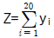
의 분포는?- 정규분포
- 포아송분포
- 이항분포
- 초기하분포
(정답률: 28%)
92. 다중회귀분석에 관한 설명으로 틀린 것은?
- 표준회잔차의 절대치가 2 이상인 값은 이상치이다.
- DW(Durbin-Watson) 통계량이 0에 가까우면 독립이다.
- 분산팽창계수(VIF)가 10 이상이면 다중공선성을 의심해야 한다.
- 표준화잔차와 예측치를 산점도로 그려 등분산성을 검토해야 한다.
(정답률: 24%)
93. 독립변수가 5개(절편항 제외)인 100개의 자료로 회귀분석을 추정할 때 표준오차의 자유도는?
- 4
- 5
- 94
- 95
(정답률: 23%)
94. 5점 척도의 만족도 설문조사를 한 결과가 다음과 같을 때 만족도 평균은? (단, 1점은 매우 불만족, 5점은 매우 만족)
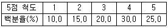
- 2.45
- 2.85
- 3.45
- 3.85
(정답률: 35%)
95. 두 변수 X, Y의 상관계수에 대한 유의성 검정(H0:ρxy=0)을 t-검정으로 하고자 한다. 이 때 올바른 검정통계량은? (단, rxy : 표본 상관 계수)
- rxy
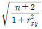
- rxy
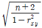
- rxy
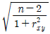
- rxy
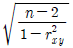
(정답률: 23%)
96. 중량이 50g으로 표기된 제품 10개를 랜덤추출하니 평균
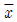
=49g, 표준편차 s=0.6g이었다. 제품의 중량이 정규분포를 따를 때, 평균중량 μ에 대한 귀무가 설 H0 : μ=50 대 대립가설 H1 : μ<50을 검정하고자 한다. 이에 적합한 가설검정법과 검정통계량은?- 정규검정법, Z0=

- 정규검정법, Z0=

- t-검정법, T0=
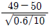
- t-검정법, T0=
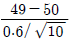
(정답률: 27%)
97. 다음 표는 새로운 복지정책에 대해 성별에 따른 찬성여부의 차이를 알아보기 위해 남녀 100명씩을 랜덤하게 추출하여 조사한 결과이다. 이 자료로부터 남녀 간의 차이 검정을 위해서는 카이제곱검정이 이용 될 수 있다. 이에 대한 설명으로 틀린 것은?
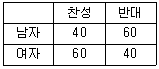
- 가설검정에 이용되는 카이제곱 통계량의 자유도는 1이다.
- 찬성과 반대의견 외에 중립의견을 갖는 사람들이 존재한다면 남녀 간 차이 검정을 위한 카이제곱 통계량은 자유도가 2로 늘어난다.
- 검정통계량인 카이제곱 통계량의 기각역의 임계값이 유의수준 0.⑤에서 3.84라면 남녀 간 차이검정의 p값은 0.⑤보다 크다.
- 남자와 여자의 찬성율비에 대한 오즈비(odds ratio)는
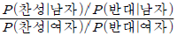
=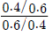
= 0.444 로 구해진다.
(정답률: 27%)
98. 어느 공정에서 생산된 제품 10개 중 평균적으로 2개가 불량품이라고 알려져 있다. 그 공정에서 임의로 제품 7개를 선택하여 검사한다고 할 때 불량품의 수를 Y라고 하자. Y의 분산은?
- 1.4
- 1.02
- 1.12
- 0.16
(정답률: 29%)
99. 표본 분포에 관한 설명으로 틀린 것은?
- 단순랜덤복원추출로 뽑은 표본 X1, X2, …, Xn 사이에는 아무런 확률적관계가 없다. 즉, X1, X2, …, Xn은 서로 독립이다.
- 단순랜덤복원추출로 뽑은 표본을 X1, X2, …, Xn이라고 할 때 각각의 분포는 모집단의 분포와 같다.
- 표본의 크기가 충분히 큰 경우 표본의 평균인
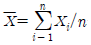
- 모집단의 크기와 상관없이 랜덤표본 X1, X2, …, Xn의 성질은 단순랜덤복원 추출에 의한 표본의 성질과 전혀 관계가 없다.
(정답률: 28%)
100. 새로운 상품을 개발한 회사에서는 이 상품에 대한 선호도를 조사하려고 한다. 400명의 조사 대상자 중에서 이 상품을 선호한 사람은 220명이었다. 이 때, 다음 가설에 대한 p-값과 같은 것은? (단, Z는 표준정규분포를 따르는 확률변수이다.)
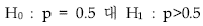
- P(Z≥1)
- P(Z≥ 5/4)
- P(Z≥3/2)
- P(Z≥2)
(정답률: 20%)